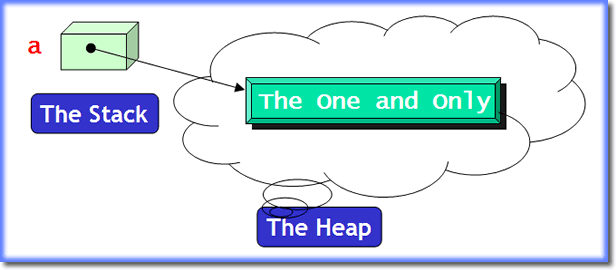
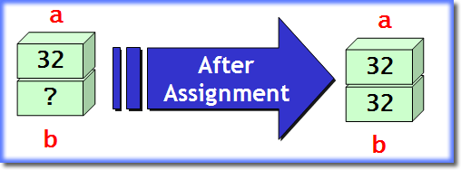
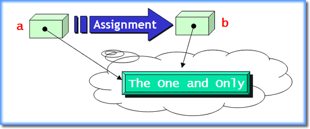
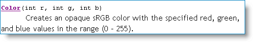
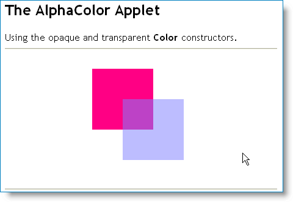

Earlier in the course, you learned
about the concept of variables, and were introduced to
the difference between primitive types, and objects.
In this lesson, we'll concentrate on creating object
variables. To do this, we'll explore a couple classes in the
java.awt package that you'll make use of
when you write applets or graphical applications.
The theme of this lesson is constructing and using objects. You'll learn:
- how to use different
Colorconstructors - two ways to use your
Colorobjects - how to create transparent colors
- how to use class variables
- how to use Java's
Randomclass

Let's start, though, by reviewing a section of material
from an earlier lesson on how to create object variables.
We'll start
our exploration by examining the Color
class. Instead of using the "built-in" objects like you
briefly saw in the last lesson (like Color.RED
and Color.BLACK), you'll learn how to create your
own custom Color objects.
Puce and chartreuse anyone?
Object Variables
As you saw in the first portion of the course, Java really has two major ways of representing data: primitive types like numbers and characters, and object types like fonts and buttons and strings. In this lesson, we'll concentrate on creating and using objects.
You create an object variable, just like a primitive variable, by explicitly describing three things:
- What kind (type) of thing will be stored in the variable
- What name you want to use for the variable
- What initial value the variable should have
To store a value in your variable you use the assignment
operator, as you've seen. The assignment operator copies the
value on its right, and stores it in the object on its left.
To create a local variable of type Color, for instance,
you would write something like this:
 As you can see, the type is
As you can see, the type is Color, the name is
background, but how do we provide a value?
Constructing Objects
At this point, we're kind of in a quandry. How do we create an object? What do we put on the right-hand-side of the assignment operator? If our variable was a number, for instance, we'd expect to do something like this:
int someNumber = 27;
Since background is an object, however,
we need to learn how to construct an object; we can't just use
a literal value like 27. Fortunately, constructing an object
is easy. To construct an object—any object—you just
use a constructor method, along with the keyword
new. A constructor is simply a method
that initializes objects.
If a class represents a blueprint that describes the attributes and methods of an object, then the constructor is the factory that creates the goods.
To make things even easier, constructors always have the same
name as the thing you're trying to create. Since we're trying
to create a Color object, we know that the
constructor is a method named Color(). Now we can
finish what we started:
public void init()
{
Color background =
new Color( . . .);
}
Constructor Parameters
Well, more or less finish. Notice that constructor parameter list is empty—there's nothing inside the parentheses. Most objects have several constructors, each one taking a different number or type of parameters. Parameters allow a constructor—or any other method—to customize its operation.
You'll look at the different Color constructors
later in this lesson. Before we do that, though, let's review
an important concept from an earlier lesson: how programs
store data. This is important so you'll understand why
we use the new operator for some variables,
(objects), and not for others, (primitives).
How Programs Store Data
Back in Unit 1, you learned a little bit about how computers use memory. As we studied the history of computing, for instance, you learned about John von Neumann's development of the stored program concept: that memory could be partitioned, with one part storing data, and another part storing program instructions.
Modern computers take this idea even further. When a program is running, we can divide its data section up into three general categories:
- The static storage area. When a program runs, there are some data elements that can be created and stored in memory for the entire time that the program is running. Constant data elements, such as string literals are one example of this kind of data. Variables shared throughout the entire program are another.
-
The stack-based storage area. When you create
a local variable inside a method, the memory used to store that
variable isn't set aside until the method is called
and the local variable declaration is encountered. That means
that if a particular method isn't called when you run your
program, no memory is set aside for those variables.
Stack-based variables are stored right next to each other in memory. This is called contiguous storage. One way to think of contiguous storage is to picture a stack of dinner plates in a restaraunt like the Soup Planation. (This is where the name stack came from.)
When you create a local variable inside a method, the memory for the variable is set aside on "the top" of the stack. When the method is finished, all of the variables placed on the stack are automatically removed, so the memory can be used for other purposes. - The heap or "free-store"-based storage area.
Stack-based storage is very efficient, but it has some real
limitations. Because elements are "stacked" on top of each
other, all of the elements need to be pretty much the same
size, (or some multiple of that size). Also, since memory
used for local variables is automatically reclaimed whenever
a method ends, stack-based variables don't work very well
for sharing information between methods.
The third area of memory, the heap, is used to get around these limitations. The heap is used to store the "data part" of reference types.

Reference Types
Reference type variables, (which include everything in Java except for the primitive types we covered in the last unit), are divided into two pieces:
- the reference or object variable
- the actual object itself
The object variable is the variable that you deal with in your program; this is the part that you provide an identifier for. The object variable may be stored on the stack or in the static storage area, as shown below:

The actual object itself is unnamed, and is stored on the heap. Heap based variables are created by using thenew operator, which allocates
the necessary memory from the heap, and then calls the
class constructor to initialize the object.
When the new operator and the constructor are
finished, they return the address in memory
where the new object is located. It's this address that is
stored in the object variable. If the object couldn't be
created, for some reason, the special value null
is stored in the variable instead.
Assignment
 Primitive types, (like
Primitive types, (like int and char),
are called value types, (as opposed to reference
types, like objects). This just means that a primitive variable
is a "bucket" in memory that contains an actual value.
When you create two primitive variables, like this:
int a = 32, b; // Two independent variables
then each variable is an independent storage area; the
variables a and b are not "linked"
in any way.
Value Assignment
When you use assignment with value types, the result is duplicate, independent copies of the values that the variables contain. Consider this example:
b = a; // Two independent values
When this code is executed, it first makes a copy of the value
stored in the variable a, and then places that
copy in the variable named b:

This is called a deep copy, and we say thata and b exhibit value semantics.
In Java, only primitive types exhibit value semantics. That's not true of all object-oriented langauges. C++, for instance, is designed to allow user-defined types, (classes), to act in the same way by defining a copy constructor and an assignment operator. You'll study this in CS 250, C++ Programming II.
Reference Assignment
As you saw earlier, an object variable, (sometimes called a handle), contains the address of an object, but not the actual object itself.
If you have some code that looks like this:
Button a = new Button("The One and Only");
Button b = a;
the assignment copies only the address, not the object.
The result is that the object variable b refers
to the same object as the variable a; the two
variables are aliases, not independent variables:

This kind of assignment, where only the address is copied, but not the underlying object, is called a shallow copy, and we say that types that exhibit this behavior have reference semantics. In Java, all types other than primitives, have reference semantics. With that understanding of the difference between reference
and object types, let's pick up where we left off, by
constructing or creating Color objects.
Creating Color Objects
Internally, Color objects in Java are represented
by a single 32-bit number, that can be broken down into three
or four pieces. You, however, don't really worry about the
internal representation; instead, you'll use the public
constructors and methods to create and manipulate Color
objects.
Logically, the Color class uses three numbers to represent
the portion of red, green, and blue that make up a color on
your computer. This is called RGB color; knowing this
will help you remember that red goes first, green second, and
blue last.
Look up the Color class in the JavaDocs.
Scroll down until you find the section titled Constructor
Summary, and then look through the seven constructors
until you find the one shown here:

As you can see, the red, green, and blue values each must be between 0 and 255. If set the value to 255, then the particular color is completely on; if you set the value to 0, then the color is completely off.Here's our example again, (from earlier in this lesson), this time
setting the variable background to an opaque green:
public void init()
{
Color background = new
Color(0, 255, 0);
}
Note that red and blue are both off (0), while green, the value in the middle, is completely on.
Using Color Objects
Once you've created a Color object, you can
use it in two ways:
- you can temporarily change the color of the
Graphicspen used in thepaint()method, or, - you can change the background or foreground of the applet (or any other component), so that the drawing will take place in this new color.
Let's start by changing the color used by the
Graphics pen that draws the shapes
and text. Inside the paint() method, you can
call the Graphics setColor() method like this:
public void paint(Graphics pen)
{
. . .
Color penColor = new Color(0, 255, 0);
pen.setColor(penColor);
pen.drawString("I'm in green!", 25, 25);
. . .
}
The phrase "I'm in green!", will, indeed, be printed in
green because of the call to setColor(). If
you won't use the variable penColor again, you
can just construct the Color object when you call
setColor() like this:
pen.setColor(new Color(0, 255, 0));
Background and Foreground
You can also use Color objects as arguments
to the Component setBackground(), and
setForeground() methods. Note that these are
not Graphics methods, so they must be
sent to a graphical Component object, such as a
your applet or the buttons and labels we'll study in
weeks to come. Since you're already inside your
applet, you don't have a receiver name when you
call the method. In such cases, you can use the keyword
this, or simply dispense with the receiver
altogether, like this:
this.setForground(new Color(128, 255, 128)); // OK
setBackground(new Color(112, 75, 233)); // Also OK
When you call setForeground() and
setBackground() you change the applet's "permanent" copy
of the Graphics object used for painting. Because
of this, you usually want to put such method calls inside
the init() method, instead of inside the
paint() method, as the examples you've seen so far.
Here's an example applet that sets its background to yellow
and then does all of its drawing in red:

Remember : Use setColor() inside
the paint() method to temporarily change the painting
color. Use setBackground() or setForeground()
inside the init() method, to permanently change the
background or foreground color of your applet.
Creating Transparent Colors
In Java 2, an additional value was added to the Color class,
called the alpha channel to control opacity. This new
model is sometimes called ARGB, but the constructor
used to create such colors puts the alpha argument last,
as you can see here:
 As with the red, green, and blue values, you supply an
As with the red, green, and blue values, you supply an
int value between 0 and 255 to specify
the opacity: 255 is completely opaque, while 0 is
completely transparent (and thus invisible).
Here's a sequence of setColor() and
fillRect() calls draws an opaque purple
rectangle, and then overlays it with a partially
transparent blue rectangle:
 Click this link to run the applet
in your browser. Here's what the applet looks like when it runs (if you don't
have Java installed on the machine you're currently using.)
Click this link to run the applet
in your browser. Here's what the applet looks like when it runs (if you don't
have Java installed on the machine you're currently using.)

Color Constants and Class Variables
Although only simple primitive types, like int have
literals, (along with the special case of the String
class, of course), some classes create public class constants
that you can use in the same way. The Color
class has defined several such constants for the most
common "plain" colors.
Here's what the constant definitions
look like in the JavaDocs.
(You can also find them in Table 1 on page 68 in
Chapter 2 of your textbook.)
 Such class constants are objects created inside the
Such class constants are objects created inside the
Color class itself, using code that looks something
like this: (we'll look at class definitions in the upcoming weeks).
public class Color
{
/**
* The color blue.
*/
public final static Color blue = new Color(0, 0, 255);
}
The modifier public means that anyone can access the
field, the modifier final means that those accessing
the field cannot change it (it is constant), and the modifier
static means that the field is associated with the
class rather than with an individual object.
The important thing to understand with with these class
constants, is that they are Color objects that
live inside the Color class.
To use such class variables you use the class name before the variable name, like this:
g.setColor(Color.BLUE);
Color background = Color.GREEN;
Note that when you use a class constant to initialize an
object variable (background in this case), you
do not use the new operator.
You may have noticed that all of the Color constants
have both lowercase and uppercase variations. The lowercase
constants are the originals, however may people complained to
Sun that the Java convention for constant names required
uppercase names for constants. In SDK 1.4, Sun added the uppercase
names to be consistent with the standard Java naming conventions.
The java.util Package
The java.util package is a collection of useful
classes that manipulate dates and times and provide facilities
for basic data structures as well as a more sophisticated and
complete random-number generating class than the one
you've been using from the Math class.
To use the classes in java.util, you must
import the package, unlike the classes included
in java.lang.
Dates
The java.util.Date class which represents
numeric time, that is, dates and times that can be
added, subtracted, and otherwise manipulated.
As with numbers, formatting dates and times in human readable form is not really part of the basic concept of dates. The same moment in time, represented as a number, can be displayed in different ways depending upon the calendar in use.
To facilitate this translation between human (cultural)
conventions and the "raw-facts" of dates and times, the
java.util package includes the Calendar
class that provides generic functionality. The generic
Calendar, however, is of limited use-it defines
what needs to be done, but can't perform the work
itself. (Such classes are called abstract
classes, and you'll study them in later chapters.)
Java's java.util package also includes a
concrete implementation of a Calendar,
the GregorianCalendar class. The Gregorian calendar
is the calendar that is used throughout much of the world today.
(We're using it, for instance, to establish the deadlines
for this class.) We won't be covering the
GregorianCalendar or the Date classes,
in depth, but you may see them on a homework assignment, and
they are covered in your textbook.
The Random Class
Using the java.util.Random class is not quite
as easy as using the Math.random() method:
- First, of course, you have to import the
java.utilpackage. You don't have to import anything to use theMathclass. - Second, you must create a
Randomobject. The methods of theRandomclass are notstaticfunctions like those of theMathclass. Instead, they are accessor functions, like those you used with theStringclass.
Despite this extra work, however, creating a Random
object, and using its methods to generate your random numbers,
can often prove beneficial. Let's start by creating a
Random object.
Creating Random Objects
Up to now, we've been creating all of our variables inside
the run(), paint() or
init() methods. When you create a
Random, object, though, you do not
want to create it inside a method; instead, you'll always
define any Random objects in your program
as instance variables or fields. You define
an instance variable outside of all methods, but
inside the class definition.
In addition, you generally want to share only a single
Random object with all of the instances
in your class. That's because the Random class
is really a random-number generator. By using a
single Random object, you ensure that the sequence
of numbers is really random, and not inadvertently duplicated
in your program.
When you construct a Random object you have
your choice of two Random constructors: one that
takes no argument and one that takes a single long
as the random number generator seed. You can use
either one of these (but you won't use both):
private static Random randGen = new Random(); // OR...
private static Random randGen = new Random(10L);
Notice that:
- This definition must appear outside of
a method. That means that they need an access specifier,
like our methods have. Since we'll only use this random
generator inside our applet, we make it
private, notpublic. - We also use the
staticmodifier, which signifies that we will be sharing this random number generator with any objects created from this class.
If you use the first constructor, the seed (or starting number) used for the random number generator is taken from the current computer system time. If you use the second constructor, the numbers generated will be randomly distributed, but the same sequence will always repeat in exactly the same order, every time the program is run.
This is often useful for testing. You run the program using a predefined seed during the test phase, and then switch to a more truly random seed when you ship your product.
Generating Numbers
To generate a random number, you send messages to
your Random object, asking it to manufacture a
new number for you. Here are some of the random numbers you
can ask for:
nextDouble()returns adoublebetween 0.0 and 1.0. This method has exactly the same characteristics as callingMath.random().nextFloat()works likenextDouble()but the result is afloat.nextInt()andnextLong()return anintand along, repectively, that is uniformly distributed over the entire range ofintorlong. That means,nextInt()could return a number anywhere from around two-billion to around minus two-billion.nextInt(int max)returns anintthat is uniformly distributed between 0 (inclusive), and max (exclusive). This is probably the most useful method in the class.nextGaussian()returns adoublelikenextDouble(), but rather than being uniformly distributed between 0.0 and 1.0, the number is "the next pseudorandom, Gaussian ("normally") distributed double value with mean 0.0 and standard deviation 1.0 from this random number generator's sequence." This means thatnextGausian()delivers both positive and negative numbers, and that those numbers can be larger than 1.0.
Once you've generated a random number using one of these methods, you may have to manipulate it, as you did earlier, to make sure it falls within the range of acceptable values.
Let 'em Roll
 Because the return values are a little different,
the manipulations are also. For instance suppose you
wanted to simulate an extremely hard-to-win lottery game
called Let 'em Roll, where the winner
must guess six random numbers between 39 and 173 (inclusive
on both ends).
Because the return values are a little different,
the manipulations are also. For instance suppose you
wanted to simulate an extremely hard-to-win lottery game
called Let 'em Roll, where the winner
must guess six random numbers between 39 and 173 (inclusive
on both ends).
This time, let's use the Random class, and the
nextInt() method to generate our numbers. As with
the year picking example, you'll need some variables to store
each of the six picks. Then, use the nextInt()
method to generate a random number of each pick; but before
storing it in the variable, manipulate it like this:
- Restrict the random number to the
values 39 to 173 (inclusive). To do this, first find
the range (number of numbers), and then pass the range
to your generator's
nextInt()method. (173-39+1 is 135 total values.) - The result of using
gen.nextInt(range)will be a positive number from 0-134, so you have to add 39 (min) for your final answer.
Here's what these steps look like in code:
// Defined outside of any method
private static Random gen = new Random();
// Inside a method
int min = 39;
int max = 173;
int range = max - min + 1;
// Generate the random numbers
int[] nums = new int[6];
for (int i = 0; i < nums.length; i++)
nums[i] = gen.nextInt(range) + min;
Coming Up ...
In this lesson you learned about how reference types and
primitive types are stored in memory. You also learned how
to create and use Color objects and how
to create a random-number generator to use in your
programs.
In the next lesson you'll learn how to use the Font
class, and how to recognize and use accessor and
mutator methods.